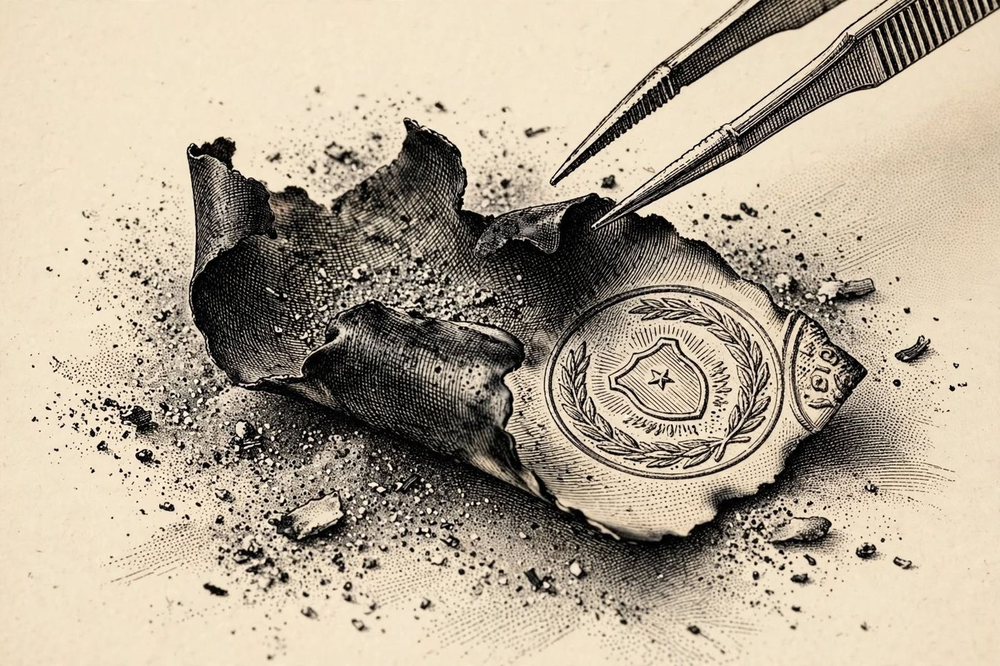

21 de diciembre
Papel quemado
Libro · págs. 88-91
Audio del día
Transcripción
«Mire en el fondo de la chimenea de Valeria… Quien intentó quemar esto tenía las manos temblorosas y no esperó a que el fuego consumiera el papel. Hay dos documentos mezclados: una hoja escrita a pluma y otra de papel más grueso, con letra impresa de documento legal. Mire las marcas y los símbolos en los bordes de los fragmentos. Encájelos sin girarlos… La verdad que alguien quiso destruir está a punto de leerse.»

Intenta resolverlo primero. Abre solo lo que necesites, en este orden.
1Pista sutil
Coloca primero las esquinas con bordes lisos (—). En el Puzle A (2×2), la esquina superior izquierda es el fragmento Z. En el Puzle B (3×3), la esquina superior izquierda es el fragmento E.
2Comprobación parcial
La disposición del Puzle A de la hoja del bloc es: Fila 1 = Z | W, Fila 2 = Y | X.
3Pista fuerte
En el Puzle B, la esquina superior izquierda es E («CODICILO AL TES…»). Junto a ella, en la misma fila, encajan los fragmentos con los símbolos ▲ y ■. En el Puzle A, la esquina superior izquierda es Z («10:00 — DEC…»).
4Solución oficialSpoiler si no lo has intentado
Puzle A (Hoja del bloc):
Fila 1: Z, W | Fila 2: Y, X
Puzle B (Codicilo):
Fila 1: E, C, G
Fila 2: A, H, B
Fila 3: I, F, D
Para el desenlace de la historia, vuelve al libro: la sección de soluciones está al final.